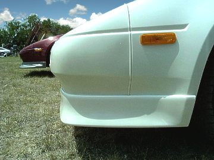

-
All that's known about the Z31 aerodynamics is that turbos (or Z31s w/ spoiler) had a coefficient of .30 while non spoiler cars were .31
I figured any effect of a TBO or even an SS would be slight. One would have to assume that the TBO lip would produce a smidge better results than an SS since it sits lower and has the protruding lip (and it being more pointed).

These cars already produce enough downforce for high speed cruising. -
IDK isn't having the lip so low helping with aerodynamics? Only really read through the first page.
Even the kaminari lip on my slicktop hangs down lower than the rest of the car by a smidge. Don't really have a problem with it.
Example: (Sorry crappy pic)
-
y'all jiggas talkin' bout aerodynamics like you'ze going fast enough for it to make a difference.
come on guys. it's more aesthetic than anything- which is the concern here- aside from exposed radiator area. -
Careless;324190 wrote: y'all jiggas talkin' bout aerodynamics like you'ze going fast enough for it to make a difference.
come on guys. it's more aesthetic than anything- which is the concern here- aside from exposed radiator area.
There .. Finally someone said it! -
It actually works the other way, non-spoiler cars have a COD of .30 while spoiler cars have a COD of .31…they create more drag, but produce more downforce…Ven;324117 wrote: All that's known about the Z31 aerodynamics is that turbos (or Z31s w/ spoiler) had a coefficient of .30 while non spoiler cars were .31
.- VG30DET (HE341) 86 300ZX - 1982 280ZX Turbo - Headered NA 1986 300ZX 2+2 - 2000 Xterra - -
Not in every case though. As with the 350Z, the base had .30 drag co but get the sport package which added front and rear spoilers, it dropped down to .29
This discussion actually came up a few years back. Someone mentioned their 85 Turbo brochure from Nissan stated .30 -
Cool, but downforce is a product of drag. -
Like I said 95% of the time it won't be enought to matter but putting a wall up may not help. Lower reduces wind uner the car, but may be just a wall for that and no downforce or aero principals at all. For a positive effect to be noticable you'll need some speed but it doesn't take much for a negative result to be achieved. I mean rolling down your windows at 60 impacts in a negative way. So more curious if the additional drag created for blocking air also does any channelling or directing of air to prevent decrease in MPG or limiting speed since essentially the wind is hitting a wall. Don't get me wrong I bought my lip for cosmetic reasons and I know I won't need aerodynamics but since it's all about aerodynamics on this thread figured it'd be worth considering. -
From MotorTrend's 1998 Supersonic Shootout article.
Side note: The Z was the 4th fastest in the test, only falling to the Ferrari Testarossa, Porsche 928 S4, & the Corvette.The fastest Japanese car was the Nissan 300ZX Turbo, at 153 mph. This car is a limited-edition model offered by Nissan and has been chassis-tuned specifically for performance. It was the only vehicle in the test into the red zone on its tachometer (5600 rpm) at top speed, and had that distinct, harsh jiggly feeling of a vehicle focused on handling performance. The high-speed performance of the Limited Edition 300ZX is undoubtedly attributed to its lower stance and improved European front airdam. The Nissan was predictably stable on the banking at speed, and the speedo was wound right against the stop at 150 mph.
Source -
Actually mikep the aerodynamic advantage of the spoiler at the back is to shear the air so as to create a smoother vortex behind the car, it ALSO helps with downforce by breaking the tendency of rounded cars to create lift, but it isn't designed to create downforce as the old 911 whale-tail was
The front lip is also to help downforce on the front of the car by reducing the amount of dense air getting trapped underneath, the denser air normally pushes a car up under speed, so that ALSO helps aerodynamics by reducing the amount of dense air rubbing on our very uneven and very coarse underbellies
To take either one farther in effectiveness, the next step would be to create a smooth undertray to guide air out behind the wheels, from the engine undertray, perhaps sloping up towards the body by the middle of the rocker panel, but ideally all the way to the gas tank -
stprasinz;316073 wrote: I am utilizing the functionality of the lip to its fullest, more so than most.
Figured since Jesus94P posted this in another thread I'd post it here. This is the lip utilized to the fullest.
-
mine looks ok....so far.SHAZAM! -
mine looks ok....so far.SHAZAM! -
I always wanted to modify the TBO so it had the stock road clearance.
Just another one of those projects that has a big o'l 'roundtuit' stuck to it. -
I had that thought too, would look really good on lowered cars too1artworkz;328396 wrote: I always wanted to modify the TBO so it had the stock road clearance.
Just another one of those projects that has a big o'l 'roundtuit' stuck to it.


Copyright © 2006–. All rights reserved. Privacy Policy